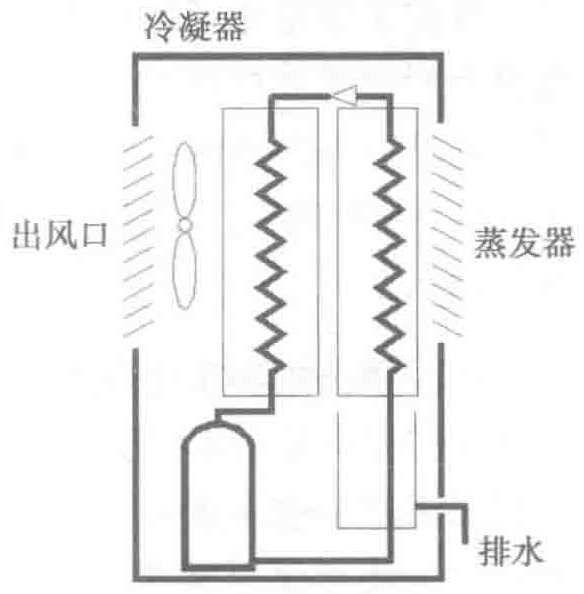

中的水蒸气析出。在原制冷量不变的情况下，制冷剂蒸气温度降低，蒸发器表面温度下降至露点温度以下，开始除湿。
采用这两种方式，除湿速度快，效率高，无须再增加一套除湿循环系统，减少了机组体积及成本，且在除湿系统工作时不影响正常的制冷循环工作。

两种方法除湿效果相近，但降风量法相对来说更方便、安全，所以绝大多数空调厂家采用此方法。
同样，由于近年来数据中心不断地提高运行温度，使得直膨机组的蒸发温度或冷水机组的出水温度也随之提高，此时通过表面冷却除湿的效果也打折扣，而降低制冷剂或冷冻水温度会加大设备的耗电量，所以，也有部分数据中心会单独配备小型的除湿机组进行湿度的独立控制。
图4-22所示为一小型冷冻除湿机的构造图，其原理与表面冷却除湿的原理是一样的。
4.6 水处理系统
我国长江流域及珠江流域大部分地区使用的自来水是地表水，水中的矿物质含量低，水硬度低，在生产中所需处理的水量较小，华北、东北及西北等地大部分地区的自来水是地下水源，水的硬度高（水中的钙、镁离子含量高），在生产中则需经过相应的处理后才能使用。
4.6.1 加湿水处理
电极式加湿器在工作时，随着水分的沸腾蒸发，原来溶解在水中的钙、镁离子就会以碳酸钙、碳酸镁的形式附着在加湿器的电极表面和加湿罐内壁上，影响电极间的正常导电，并使加湿罐内的存水量减少，严重时会阻塞加湿系统的排水甚至于整个机房空调系统的排水管，并有可能造成机组排水溢出，形成漏水。因此加湿罐在秋、冬、春季工作时，需要定期清洗。以华北地区为例，在冬季、春季室外含湿量极低的时候，加湿器最好每周进行清洗。
为了减少清洗加湿器的工作量，可考虑对加湿上水的水质做软化处理。软化水处理的方法主要有：
1. 离子交换软化水
这是一种在暖通行业里应用非常广泛且技术成熟的软化水处理方法。工作原理是自来水先通过环氧树脂过滤，环氧树脂会吸附水中的钙、镁离子，同时置换出相对较活跃的钠、钾离子。在导电率变化不大的情况下，上水中能够形成水垢的钙、镁离子已经被除去，而钠、钾离子即使与碳酸根结合也不会形成水垢。这样，加湿器在工作的时候就不需要再去